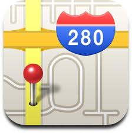

Lettertypen worden allemaal gestuurd vanuit de ccs file(s), maar als we in staat zijn om in word een bepaald lettertype te laten landen in een css gedefinieerd type zou dat een mooie extra zijn.
Default gaat alle word-tekst naar 1 in de css te definiëren stijl. Maar optioneel kunnen we teksten een eigen stijl geven die we al dan iet gebruiken. Ondersteun dan minimaal:
Calibri
Calibri light
Courier is ook fijn voor bijvoorbeeld code voorbeelden
Tekst Stijlen
Minimaal wordt ondersteund:
tekst
superscript
subscript
Vetgedrukte tekst
Cursieve tekst
Onderstreepte tekst
Cursieve Onderstreepte tekst
Vetgedrukte Cursieve tekst
Vetgedrukte Cursieve Onderstreepte tekst
Respec maakt er dan dit van:
En een stukje tekst kan ook <span class=’note’> gehighlight</span> zijn natuurlijk, of in een <red>andere kleur</red> zijn geschreven, dat zou in de html dan in dezelfde layout moeten worden getoond.
<span class=’note’ is standaard respec css, <red> is een eigen toevoeging aan de geonovum.css (op tools.geostandaarden.nl) of lokaal in ./media/style.css….
Speciale stijlen
In word zou je dat met een arcering willen kunnen aangeven: De generieke werking wordt dan dat je een arcering kan omzetten naar een <div> of een <p> met een bepaalde class. Zie voor de beschikbare classes de paragraaf CSC in deze respec handleiding
Let op: het is dezelfde highlight functie in word, of het een hele alinea is of alleen een stukje uit de tekst bepaalt of het een <pre> /<div> of een <span> wordt
Let op: code voorbeelden hebben een eigen stijl, meestal een lettertype als courier o.i.d. want even grote letters, en ook is de code vaak ingesprongen met tabs of spaties. Dat moet in de ‘example’ style bewaard blijven!
Code blokken
Soms wil je stukjes code opnemen in je document, dan zet je er in Markdown drie quotes voor en drie achter. Let erop dat je de juiste ` gebruikt. Het is die onder de ~.
Dit kan met door jou ontwikkelde tooling natuurlijk veel mooier door er een bepaald highlight voor te kiezen:
int test(int value, int *result)
{
result = value > 0;
return ( result);
}
Vraag GW: Moet code altijd als example getoond worden? Nu ingesteld met <pre class="example"><code>...</code></pre>. Niet ingesteld met aside omdat het inline is, dus echt een onderdeel van de textflow. Aside gebruikt als het niet 'echt' een onderdeel van de textflow is.
De voorbeeldcode moet natuurlijk op dezelfde manier zijn uitgelijnd en ingesprongen zoals in word ingetikt. Ook zal het lettertype monospaced moeten zijn, bijvoorbeeld courier.
<aside class='example'>
int test(int value, int *result)
{
result = value > 0;
return ( result);
}
</aside>
Lijsten
Respec ondersteunt verschillende vormen van lijsten vanuit markdown. Dit zijn
Bullets
Een
Twee
Drie
Vier
Genummerde lijsten
Een
Twee
Drie
Vier
Taken/Vinklijsten
Een
Twee
Drie
Vier
Ik weet niet of deze kan werken, Respec/Markdown ondersteunt het wel
Tabellen
Van tabellen wordt veelvuldig gebruik gemaakt.In standaard Respec/Markdown bestaat slechts 1 soort tabel, maar ik kan me voorstellen dat er meerder vormen/layout moeten kunnen.
Simpele tabel
Kop1
Kop2
Kop3
Kop4
Waarde
Waarde
Vette waarde
Cursieve Waarde
Onderstreepte Waarde
Gekleurde tabellen
Tabel 1: groentinten
Kop1
Kop2
Kop3
Kop4
Waarde
Waarde
Vette waarde
Cursieve Waarde
@@@
Onderstreepte Waarde
Tabel 2: roodtinten
Kop1
Kop2
Kop3
Kop4
Waarde
Waarde
Vette waarde
Cursieve Waarde
Onderstreepte Waarde
Tabel 3:Geeltinten
Kop1
Kop2
Kop3
Kop4
Waarde
Waarde
Vette waarde
Cursieve Waarde
Onderstreepte Waarde
Kruis Verwijzigingen
Verwijzing naar hoofdstuk of paragraaf
In html wil je kunnen springen tussen hoofdstukken. Dit is een verwijzing naar de Lettertypen paragraaf. Ik kan klikken op Lettertypen en dan spring ik naar dat hoofdstuk toe. In html moet duidelijk zijn dat het woord klikbaar is, dus een hyperlink van maken! (voor alle duidelijkheid, de woorden ‘Lettertypenin deze alinea zijn kruisverwijzingen.
Verwijzingen naar een afbeelding
Op dezelfde manier wil je ook naar afbeeldingen kunnen springen.
Bijvoorbeeld: Zie afbeelding Figuur 1: Adresboek
Ook hier geldt dat ik de tekst in de HTML hetkenbaar al ‘klikbaar ‘ wil hebben, dus als hyperlink.
Verwijzingen naar een tabel
En ook op dezelfde manier wil je ook naar tabellen kunnen springen.
Bijvoorbeeld: Zie Tabel 2: roodtinten
Ook hier geldt dat ik de tekst in de HTML herkenbaar al ‘klikbaar’ wil hebben, dus als hyperlink.
Voetnoten
Voetnoten zijn iets uit de papieren wereld, en niet uit de web documenten wereld. Toch kom je ze af en toe nog tegen. Dit is een verwijzing naar voetnoot [1] Voetnoot één! . De mooiste oplossing om voetnoten in een web document te gebruiken is om de voetnoot te vertalen naar hovertekst.
Eindnoten
Eindnoten zijn ook iets uit de papieren wereld, en niet uit de web documenten wereld. Toch kom je ze af en toe nog tegen. Dit is een verwijzing naar eindnoot[i] Dit is een eindnoot . De mooiste oplossing om eindnoten in een web document te gebruiken is om de eindnoot te vertalen naar hovertekst.
Eindnoten zijn ook iets uit de papieren wereld, en niet uit de web documenten wereld. Toch kom je ze af en toe nog tegen. Dit is een verwijzing naar eindnoot[ii] Dit is een eindnoot . De mooiste oplossing om eindnoten in een web document te gebruiken is om de eindnoot te vertalen naar hovertekst.
URL’s (hyperlinks)
Alle hyperlinks en Url’s moeten ook gewoon werken, hier een belangrijke url waarin allerlei standaard door respec ondersteunde zaken staan:
Respec heeft een aparte stijl voor het markeren van een blok tekst als een issue.
Het issue kan gelinkt worden naar een bestaand Github issue door het issue nummer in `data-number` op te nemen. ReSpec haalt dan de titel, label en tekst van het issue automatisch op!
Dit is een voorbeeld van de html verwijzing naar een github issue:
<pre>
<aside class="issue" data-number="137">Hierover staat dit issue nog open<aside>
Oplossing in de software: Herkennen dat het om een github link gaat via string ‘/issues/’, het nummer staat er direct achter, en de tekst in de verwijzing staat voor de ‘:http’, dan heb je m.i. alles dat nodig is om de < aside></aside> te vullen.
Afbeeldingen
Afbeeldingen moeten gewoon kunnen worden ingevoegd, en voorzien van een nummer en een omschrijving van het plaatje.
Een lijst met afbeeldingen moet in index.html kunnen worden opgenomen, deze index heeft de vorm van een tabel met klikbare afbeeldingsnummers en afbeeldingen teksten
In word wordt dat als volgt
Figuur 1: AdresboekFiguur 2: Routeplanner
In HTML ziet dat er zo uit:
<figure id="1-Adresboek">
<img src="media/adresboek.jpg" alt="">
<figcaption>Adresboek</figcaption>
</figure>
<figure id="2-Routeplanner">
<img src="media/routeplanner.jpg" alt="">
<figcaption>Routeplanner</figcaption>
</figure>
Referenties
ReSpec kan een bibliografie voor je genereren onderaan het document. Zet een afkorting van het document waar je naar wilt verwijzen tussen dubbele blokhaken in je tekst. De afkorting wordt klikbaar, en de volledige bibliografische informatie van het document komt in appendix A te staan. De afkorting moet óf bekend zijn bij [SpecRef](https://www.specref.org/) (de bibliografische database van W3C, te raadplegen via de ReSpec knop rechtsboven in je document), óf in je [config.js](./config.js) zijn opgenomen als bibliografisch gegeven.
In HTML ziet een referentie er zo uit:
<pre>
Een paar verwijzingen naar de localBiblio staan hier [[GIF]]
zie vooral ook [[KANDELAAR]] voor het alternatief gebruik van Kandelaars
</pre>
Waarbij het gebruik van een uitroepteken aangeeft dat een verwijzing normatief is.
In word kunnen we daar gewoon stijlen voor gebruiken:
Voor een niet normatieve verwijzing stel ik voor de stijl Intensieve Benadrukking
en voor een wel normatieve referentie stel ik voor de stijl intensieve verwijzing
Een paar verwijzingen naar de localBiblio staan hier GIF
zie vooral ook KANDELAAR voor het alternatief gebruik van Kandelaars